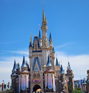

東京迪士尼
 東京迪士尼夢想與魔法的王國 — 體驗壯觀的遊行表演與遊樂設施等，展開一段充滿感動與驚奇的夢幻冒險。 東京迪士尼樂園由7座主題區域組成，歡迎在此度過夢幻般的一天。
這裡有最新最全的東京旅遊資訊，幫助你暢遊東京。
夢想與魔法的王國 — 體驗壯觀的遊行表演與遊樂設施等，展開一段充滿感動與驚奇的夢幻冒險。 東京迪士尼樂園由7座主題區域組成，歡迎在此度過夢幻般的一天。
東京都內歷史最悠久的寺院淺草寺，每年參拜人數超過3,000萬人次！ 寺院建於628年。據說在戰國時代，德川家康曾為了在爭奪天下的重要戰役「關原之戰」中取得勝利而特地來此祈願。 寺院內有作為淺草寺象徵的「雷門」，以及被指定為重要文化財產的「淺草寺傳法院」等多個代表日本歷史文化之獨特魅力的建築。 從雷門到正殿全長約 250公尺 的「仲見世通」上，土產店和小吃攤等各種店鋪鱗次櫛比。可在人潮川流不息的商店街上購買和菓子、日本茶以及能感受日本傳統文化的土特產等伴手禮，盡情享受東京下町特有的懷舊風情。 如此滿載日本歷史及傳統文化的「淺草寺」，是造訪東京必去一次的魅力景點。
當時在屋台販賣飯糰大小的手握壽司，可以直接用手食用，是一種類似現代快餐一樣的方便食物。 「江戶前壽司」的特點是使用味道醇厚的紅醋，醋飯會略帶紅色，並使用經過事前調味的食材，更能帶出魚肉的鮮味。 現今在東京依然能吃到這種保留了江戶時代特色的「江戶前壽司」，不妨品嚐一下。
東京擁有便捷的公共交通系統，包括地鐵、巴士和火車。
如果你有任何問題或建議，請發郵件給我們。